Learning outcomes
By the end of Chapter 11 you should be able to do each of these. The tag shows where it is covered.
- 11.1Describe the processes of the water cycle.
- 11.2Describe drainage basins, watershed protection, and the water budget.
- 11.4Describe why water laws exist, who controls them, and how water is shared in the western United States.
- 11.5.4Describe the zones of sediment production, transport, and deposition, and stream equilibrium.
- 11.5.5Describe stream landforms: channel types, alluvial fans, floodplains, natural levees, deltas, entrenched meanders, and terraces.
- 11.6Describe what makes a good aquifer, and define confining layer and water table.
- 11.7Describe the three major groups of water contamination and three types of remediation.
- 11.8Describe karst topography, how it forms, and its landforms.
How to use this guide
Underlined words are key terms. Click one, or open Key terms at the bottom right, to read and search every definition from this chapter. The chapter follows water as it moves: through the water cycle (11.1), across drainage basins and budgets (11.2), into human use and law (11.3–11.4), down streams that carve and build landforms (11.5), through the ground as groundwater (11.6), into contamination and cleanup (11.7), and finally dissolving limestone into karst (11.8).
All life on Earth needs water. The (all of Earth's water) is also an agent of geologic change: water deposits minerals, helps lithify sediment, and alters rocks after they form. Water carried down by subducting plates causes flux melting in the mantle, and it is one of the volatiles in magma that escapes as steam at volcanoes.
People rely on water for drinking, farming, power, and much more. In pre-industrial civilizations the powerful controlled water. Roman aqueducts built about two thousand years ago still stand in Europe, the Middle East, and North Africa (Figure 11.1). Maya buildings show water imagery such as frogs, water lilies, and water birds. In the dry lowlands of the Yucatán Peninsula, masks of the rain god Chac (or Chaac) cover buildings such as the Kodz Poop (Temple of the Masks) at Kabah (Figure 11.2). Governments still control water in most modern societies.
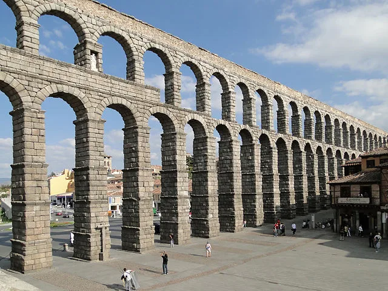

Water and power
Ancient engineering (aqueducts) and religion (rain gods) both show how central water was to early societies.
Today the same question, who controls water, is handled through laws and water rights (Section 11.4).
11.1Water cycle
The is the continuous circulation of water through Earth's atmosphere, land, and oceans. Along the way water changes state (solid, liquid, gas) and location. Its processes are evaporation, transpiration, condensation, precipitation, and runoff (Figure 11.3).
| Process | What happens |
|---|---|
| Solar energy warms water until its molecules vaporize; liquid becomes gas. Happens from oceans, lakes, streams, and the land surface. | |
| Plants release water vapor through tiny pores in their leaves. Evaporation plus transpiration = . | |
| Invisible water vapor cools (or air masses of different temperatures mix) and turns back into liquid droplets, usually around a speck of dust or salt, a . Suspended droplets form clouds. | |
| Droplets collide and grow until they fall as rain, snow, hail, or sleet. | |
| and | On the ground, water evaporates, flows over the surface into streams and lakes (), or soaks into pores in soil and rock to become . |

Groundwater moves slowly through rock and loose sediment. Some returns to the surface at springs, streams, lakes, and the ocean, and surface water in streams and lakes can soak back down to groundwater. Surface water and groundwater are one connected system.
Check yourself: Section 11.1 quiz in the textbook ↗
11.2Water basins and budgets
11.2.1 Drainage basins
The basic unit of the landscape is the , also called a or : the area of land that collects precipitation and sends its runoff to one stream or stream segment. are local high points that separate basins. Rain falling on one side of a divide goes to one stream; rain on the other side goes to another. Every stream, tributary, and streamlet has its own basin. On flat land divides are hard to see, but they still exist.

Parts of a stream system
- : where the stream begins.
- : smaller streams that join downhill to form the larger trunk stream.
- : where the stream ends, usually at the ocean.
- : a basin with no outlet to the sea; water leaves only by evaporation.
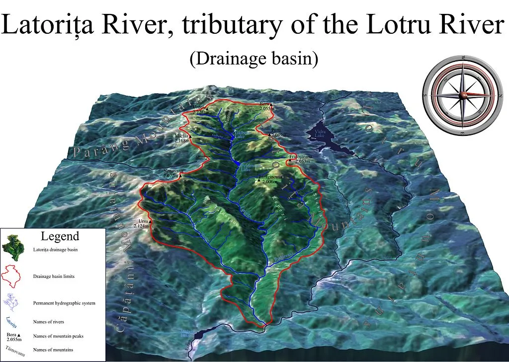
Most streams in the of western North America end in closed basins. In Salt Lake County, Utah, for example, Little Cottonwood Creek and the Jordan River flow into the Great Salt Lake, where the water evaporates (Figure 11.6).
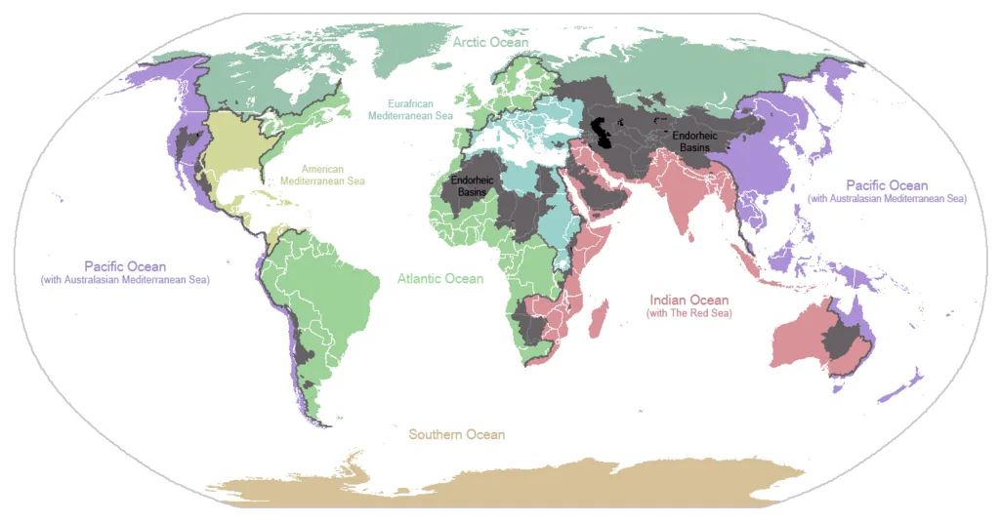
| Perennial | Ephemeral | |
|---|---|---|
| Term | ||
| Flow | All year; level rises and falls with the seasons | Only during rain or the wet season |
| Climate | Humid or temperate: enough rain, low evaporation | Arid (like much of Utah): little rain, high evaporation |
| Channel | Always holds water | Often a dry wash or most of the year; sudden flow causes |
Along Utah's Wasatch Front (the urban strip from Brigham City to Provo), several watersheds are watershed protection areas. Dogs and swimming are limited there because they could add harmful bacteria and other substances to the drinking water of Salt Lake City and nearby towns.
11.2.2 Water budgets
A works like a personal money budget (Table 11.3). If expenses are larger than income, the budget is out of balance and water is taken from savings (storage), if there is any. In dry regions this balance is critical, and managing it is an ongoing political and social challenge.
| Money budget | Water budget |
|---|---|
| Income | Precipitation; stream and groundwater inflow |
| Expenses | Groundwater withdrawal; evaporation; stream and groundwater outflow |
| Savings | Storage: reservoirs, snow, ice, soil moisture, and aquifers |
Hydrologists can make groundwater budgets for any area (a state, a county, or an aquifer), but they usually use watershed (basin) boundaries, where surface water and groundwater are easiest to account for. The groundwater budget is a key part of a hydrologic model, which combines measured data with a conceptual picture of the water system.
Check yourself: Section 11.2 quiz in the textbook ↗
11.3Water use and distribution

U.S. water use in numbers
- 1,344 billion L (355 billion gallons) of ground and surface water used each day.
- 288 billion L (76 billion gallons) of that is fresh groundwater.
- California uses 16% of the nation's groundwater.
- Nevada is the driest state; Utah is second driest.
- Utah has the second-highest domestic use per person: 632 L (167 gallons) per day.
High demand plus limited supply puts Utah at risk of water budget deficits. Water use has also changed over time with population (Figure 11.8).

11.3.1 Surface water distribution
Fresh water is precious, especially in dry climates. Of all fresh water, only about 1.2% is surface water, and 69% of that is locked in ground ice and permafrost. Rivers hold only 0.006% of fresh water and lakes 0.26%.
Global circulation is the most important control on where precipitation falls. Because of the and the uneven heating of Earth, air rises near the equator and near 60° N and S, and sinks at the poles and near 30° N and S (Figure 11.9; see also Chapter 13). Rising air cools and drops its moisture, so land near it tends to be humid and wet. Sinking air inhibits precipitation, so land near it tends to be dry.
Local factors also matter: prevailing winds, ocean currents (such as the Gulf Stream's effect on eastern North America), (the dry leeward sides of mountains), and nearby water bodies. When moist air from a lake meets nearby mountains, it rises and cools and may drop snow or rain: .
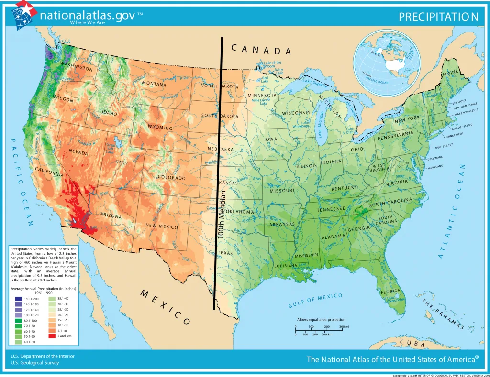
In the United States the 100th meridian roughly divides the humid east from the arid west (Figure 11.10). West of it, crops need irrigation. Western surface water is stored in reservoirs and mountain snowpacks and released through canals when demand is high.
Some of the driest places are in the Province, with its north–south mountain ranges. Most of its valleys get less than 30 cm (12 in) of precipitation a year, but some ranges get more than 1.52 m (60 in) of water as snow. That is measured as : the depth of water the snow would make if it melted, which is much less than the depth of the snowpack.
11.3.2 Groundwater distribution
Groundwater holds 30.1% of Earth's fresh water, making it the most abundant fresh water that most people can reach. Most fresh water, 68.7%, is ice in glaciers and ice caps (Table 11.4, Figure 11.11). As glaciers and ice caps melt with global warming, that fresh water flows into the oceans and is lost as fresh water.
| Water source | Volume (cubic miles) | Fresh water (%) | Total water (%) |
|---|---|---|---|
| Oceans, seas, and bays | 321,000,000 | — | 96.5 |
| Ice caps, glaciers, and permanent snow | 5,773,000 | 68.7 | 1.74 |
| Groundwater (total) | 5,614,000 | — | 1.69 |
| — fresh | 2,526,000 | 30.1 | 0.76 |
| — saline | 3,088,000 | — | 0.93 |
| Soil moisture | 3,959 | 0.05 | 0.001 |
| Ground ice and permafrost | 71,970 | 0.86 | 0.022 |
| Lakes (total) | 42,320 | — | 0.013 |
| — fresh | 21,830 | 0.26 | 0.007 |
| — saline | 20,490 | — | 0.006 |
| Atmosphere | 3,095 | 0.04 | 0.001 |
| Swamp water | 2,752 | 0.03 | 0.0008 |
| Rivers | 509 | 0.006 | 0.0002 |
| Biological water | 269 | 0.003 | 0.0001 |
Check yourself: Section 11.3 quiz in the textbook ↗
11.4Water law
Federal and state governments make laws so water is used fairly. In the United States, each state is responsible for a legal system for sharing water.
11.4.1 Water rights
Because water is limited, especially in the West, states grant : legal claims to part or all of a water source, such as a spring, stream, well, or lake. Federal law gives states control of water rights, except for federally reserved water rights (for example, for national parks and Native American tribes) and navigation servitude, which keeps navigable waters navigable. Each state manages rights differently, and anyone (a person, company, or organization) needs a water right to legally take or use surface water or groundwater.
Prior appropriation: "first in time, first in right"
Water rights in some western states follow : the holder of the oldest water right gets water first whenever there is not enough to fill every right.
The Colorado River and its tributaries cross a desert region: seven states (Wyoming, Colorado, Utah, New Mexico, Arizona, Nevada, California), Native American reservations, and Mexico. As the West grew and California became a major farm producer, these states set a water budget for the basin: the of 1922, which gave each state a fixed volume based on the river's measured flow. But flow in 1922 was higher than the long-term average, so more water was allocated than the river usually carries. Later agreements, including those behind Hoover Dam (formerly Boulder Dam) and Glen Canyon Dam, and a treaty with Mexico, are together called "The Law of the River" by the U.S. Bureau of Reclamation.
- Colorado River Compact divides the river's water among the seven basin states.
- Hoover Dam completed (outside source: U.S. Bureau of Reclamation).
- Water treaty between the United States and Mexico (outside source: U.S. Bureau of Reclamation).
- Glen Canyon Dam completed, forming Lake Powell (outside source: U.S. Bureau of Reclamation).
Many believe the river is still over-allocated: its flow no longer reaches its original end at the sea. Dams divert water and let it evaporate, causing serious water budget concerns, and drought predicted with global warming adds to them. The Law of the River shows how complex and slow interstate water agreements are, and how important water is.
Snake Valley: Utah and Nevada
Snake Valley straddles the Utah–Nevada border, with more of its irrigable land in Utah. In 1989 the Southern Nevada Water Authority (SNWA) applied for water rights to pipe up to 191,189,707 m³ (155,000 acre-feet) of water a year from Spring, Snake, Delamar, Dry Lake, and Cave valleys to southern Nevada, mostly for Las Vegas. (An acre-foot is one acre covered by water one foot deep.) Utah and Nevada attempted an agreement but did not settle it.
Update (outside source): in May 2020 the SNWA board voted to withdraw its pending groundwater applications and put the pipeline project in "indefinite deferred status" (Las Vegas Sun, May 21, 2020).
11.4.2 Water quality and protection
| Law or program | What it does |
|---|---|
| (an amendment of the Federal Water Pollution Control Act) | Protects navigable waters from dumping and point-source pollution. |
| Makes sure water from public suppliers, such as cities and towns, is safe to drink. | |
| EPA program (part of the Comprehensive Environmental Response, Compensation, and Liability Act of 1980) | Pays for cleanup of hazardous contamination, including of surface water and groundwater. States and the EPA can pay for remediation and then sue the polluter to recover the cost; a polluter can avoid a lawsuit by cleaning up or paying for the cleanup. |
Check yourself: Section 11.4 quiz in the textbook ↗
11.5Surface water
In geology, a is any body of flowing surface water confined to a channel; "river", "creek", and "brook" are everyday words, not geologic terms. Streams, together with waves (Chapter 12), are the most important agents that erode and transport sediment at Earth's surface. They shape much of the landscape and are a key water resource. The two main factors in how streams erode and carry sediment are:
- : the slope of the stream, in meters per kilometer or feet per mile. A steeper gradient promotes erosion. When tectonic forces raise a mountain, the gradient increases and the stream cuts down, eventually forming a valley.
- Stream-channel velocity: how fast the water flows. Downstream, the gradient decreases, but discharge and channel size increase as tributaries join, and channel roughness decreases as the sediment lining the channel gets finer (less friction). The combined effect is that velocity actually increases from mountain brooks to the mouth.
11.5.1 Discharge
Stream size is measured as : the volume of water flowing past a point in a given time, in cubic meters per second (m³/s, or cms) or cubic feet per second (ft³/s, or cfs). Discharge increases downstream (Table 11.6).
| River | m³/s (cms) | ft³/s (cfs) |
|---|---|---|
| Jordan River at Utah Lake | 16.25 | 574 |
| Mississippi River (largest in North America) | 16,990 | 600,000 |
| Amazon River (largest in the world) | 175,565 | 6,200,000 |
Velocity also changes within one place along a stream:
- If the channel narrows but discharge stays the same, the same volume must pass through a smaller space, so velocity increases, like putting a thumb over the end of a garden hose.
- During rainstorms or heavy snowmelt, runoff increases, raising both discharge and velocity.
- In a straight, evenly deep channel, the fastest water is in the center at the surface, farthest from friction with the bed and banks.
- In a bend, the fastest water is on the outside of the bend, near the cut bank (Figure 11.13).
The is the line along a river's deepest channel.
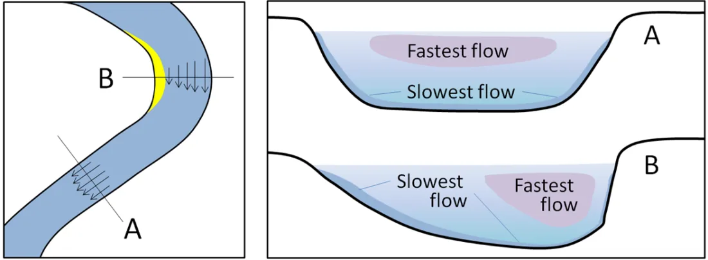
11.5.2 Runoff vs. infiltration
Whether rain soaks in or runs off depends on the amount, type, and intensity of precipitation; the vegetation; the slope; the temperature and aspect of the land; earlier conditions; and the soil (Table 11.7). If rain falls faster than the soil can take it in, the excess becomes runoff.
| Factor | More runoff | More infiltration |
|---|---|---|
| Rain intensity | High-intensity rain | The same amount spread over a longer time |
| Vegetation | Sparse cover | Dense cover slows overland flow, giving water time to soak in |
| Slope | Steep (a cliff) | Gentle or flat (a basin) |
| Soil moisture | Already saturated soil | Dry soil with room for water |
| Soil type | Clay-rich | Gravel-rich |
Land with more direct sunlight or higher seasonal temperatures has both less infiltration and less runoff, because more water is lost to evapotranspiration.
11.5.3 Drainage patterns
The pattern that tributaries make in a region is its . It depends mostly on the rock underneath and its structures, such as folds and faults (Figure 11.14, Table 11.8).
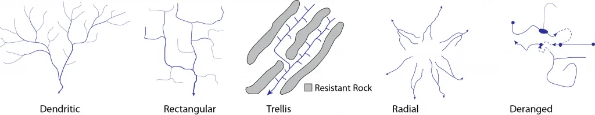
| Pattern | Where it forms |
|---|---|
| (most common) | Uniform, mostly flat-lying rock or sediment that erodes equally in all directions, such as alluvial sediment or flat sedimentary rock |
| Folded or tilted sedimentary rocks eroded unevenly by strength, as in the Appalachian Mountains | |
| Little topography, with bedding planes, joints, or faults forming a rectangular network | |
| Streams flowing away from a central high point such as a mountain or volcano (each stream is often dendritic) | |
| Extensive limestone, where streams disappear underground into caves |
11.5.4 Fluvial processes
processes control how a stream produces, transports, and deposits sediment. They include velocity, gradient, erosion, transportation, deposition, equilibrium, and base level. A stream system has many small tributaries in the source area, a main trunk stream in the floodplain, and distributaries at the mouth; large systems like the Mississippi combine many of each. Its three zones show on the stream's , a plot of channel elevation along its whole course (Figure 11.15).
Zone of sediment production
In the , rills and gullies erode sediment and feed larger tributaries. Headwater tributaries have the steepest gradients, so erosion there produces a lot of sediment. Headwater streams are narrow and straight, with small or no floodplains, and usually lie at high elevations. Much of the Colorado River's headwaters are in the Rocky Mountains of Wyoming and Colorado west of the Continental Divide; the Mississippi system's headwaters lie east of the Continental Divide and west of the Appalachian Divide.
Zone of sediment transport
In this zone, erosion of fine sediment in the channel roughly balances transport across the floodplain. Faster, steeper streams carry larger grains; when velocity drops, large grains settle, and when it rises they are picked up again (entrained). Transported sediment is grouped into three loads (Figure 11.16):
- : the largest, densest particles, moved along the bed by (bouncing) and (rolling or being pushed along).
- : smaller particles lifted and carried within the water. Which sizes travel as bedload or suspended load depends on flow velocity.
- : ions in solution from chemical weathering, such as bicarbonate (HCO₃⁻), calcium (Ca²⁺), chloride (Cl⁻), potassium (K⁺), and sodium (Na⁺). The amount is not affected by flow velocity.
A is the flat land beside a channel that floods regularly. Flooding is natural and adds sediment, making fertile soils. A stream flows fastest when it is nearly full, the . Once it overtops its banks, the water slows; the sediment it was carrying drops first at the channel edge, building a low ridge, the (Figure 11.17).
Zone of sediment deposition
Deposition happens when bedload and suspended load come to rest on the bed of a stream, lake, or ocean because the gradient and velocity drop. Erosion and deposition both happen in the transport zone (on cut banks and point bars), but the final deposition is where the stream reaches a lake or ocean. There, fine sand, silt, and clay build a .
Equilibrium and base level
Every stream has a longitudinal profile from headwaters to mouth (Figure 11.18). Streams try to reach an energy balance among erosion, transport, gradient, velocity, discharge, and channel shape along the profile. This balance is equilibrium, a state called ; a stream close to it is a .
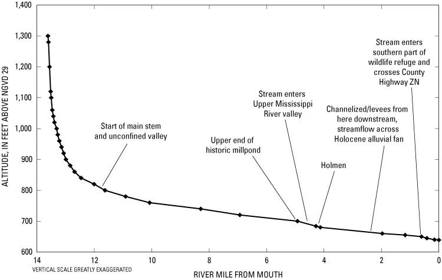
is the elevation of a stream's mouth, the lowest level it can erode to. The ultimate base level is sea level, but a lake or reservoir can be a local base level. The Great Basin (western Utah, Nevada, and nearby states) has no outlet to the sea, so its streams have internal base levels. Base level changes when sea level rises or falls, or when a natural or human-made dam is built.
When base level changes
- Base level drops: the stream cuts down and deepens its channel.
- Base level rises: deposition increases as the stream adjusts toward a new equilibrium.
11.5.5 Fluvial landforms
Stream landforms are land features made by stream erosion or deposition. Many depend on the channel type.
Channel types
Gradient, sediment load, discharge, and base level all control channel type (Table 11.9).
| Type | Description | Where |
|---|---|---|
| Steep gradient, low discharge, narrow V-shaped valley | Near headwaters, in mountains | |
| Many channels split and rejoin around mid-channel bars | Low-gradient floodplains near sources of coarse sediment: trunk streams draining mountains, or in front of glaciers | |
| One channel curving back and forth like a snake; widens its floodplain by eroding sideways | Where the stream leaves the headwaters and enters the zone of transport | |
| Meanders cut down into bedrock | Areas of uplift, such as the Colorado Plateau |


In a meandering stream the fastest water is on the outside of each bend. It erodes that bank, the , and the loop grows wider. In straight reaches the thalweg and fastest water are in the center, but in a bend the thalweg shifts toward the cut bank. Opposite the cut bank, on the inside of the bend, velocity is lowest and sediment is deposited as a (Figure 11.21).
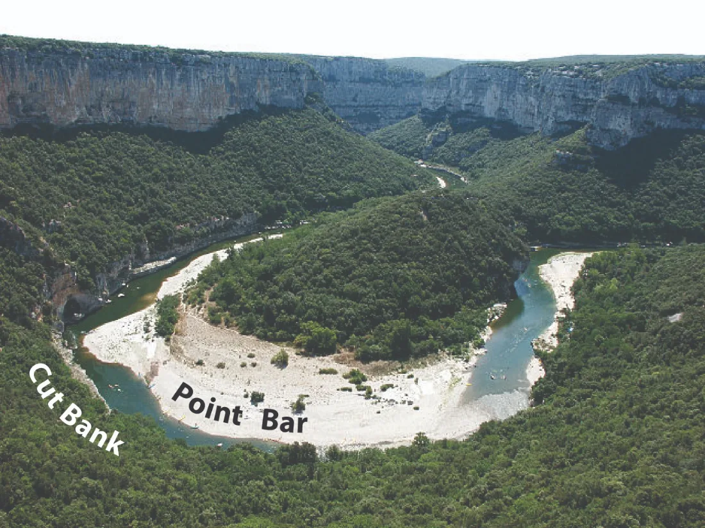
Where land is uplifted, as on the Colorado Plateau, meandering streams that once flowed across the plateau surface became (incised): they kept their meandering shape while cutting down into bedrock. Over the past several million years the Colorado River and its tributaries have cut hundreds to thousands of feet into the flat-lying rocks of the plateau, creating deep canyons including the Grand Canyon (Figure 11.22, Figure 11.23).

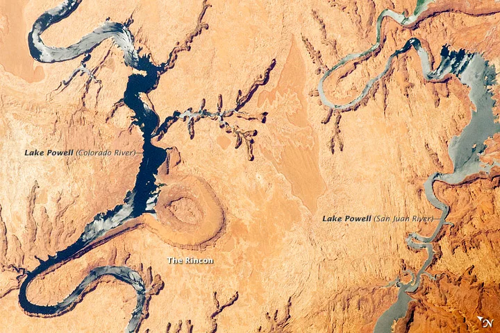
Floodplain landforms
Many landforms occur on the floodplain of a meandering stream. Meanders and regular floods widen the floodplain by eroding the uplands beside it (Figure 11.24).

Levees and floodplain streams
- Natural levees confine the channel. They can block tributaries from reaching the main channel, so these flow parallel to the trunk until a gap in the levee lets them join.
- People build artificial levees to limit flooding. Sediment that breaks through a levee in a flood spreads silt and clay over the floodplain as a , which makes good farmland.
- When floodwater overtops an artificial levee, the levee can erode quickly with catastrophic effects. Farmers return and rebuild because the soils are so good.
With erosion on the outsides of bends and deposition on the insides, meandering channels migrate back and forth across the floodplain. On broad, very low-gradient floodplains, bends can become so tight that the stream cuts across a narrow neck: a cutoff. The old loop is isolated as an , which fills with sediment, becomes a wetland, and finally a (Figure 11.25, Figure 11.26). This can happen quickly. Where a river is a geographic or political boundary, these shifts can cause conflicts.

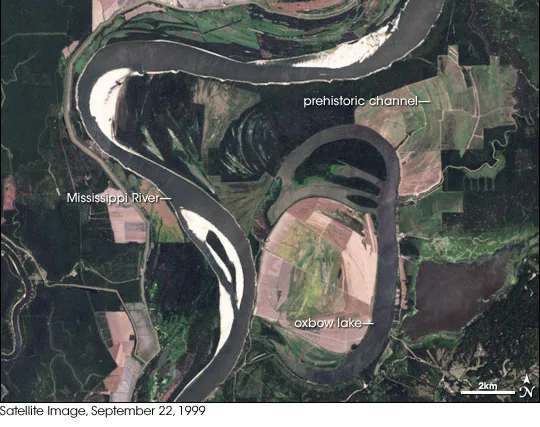
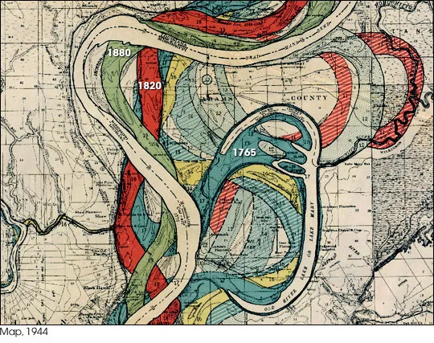
Alluvial fans
An forms where a stream leaves a mountain canyon and enters a valley. No longer confined by canyon walls, the stream slows, spreads out, and drops bedload of all sizes, like "a delta in the air". As channels fill with sediment, the stream shifts sideways, and the deposit grows into a cone with distributary channels radiating from the canyon mouth (Figure 11.29). Fans are common in dry climates of the West, where ephemeral streams leave canyons in the Basin and Range.

Deltas
A forms where a stream reaches quiet water, such as a lake or the ocean, and drops its bedload and suspended load. If wave erosion is stronger than the river's deposition, no delta forms.
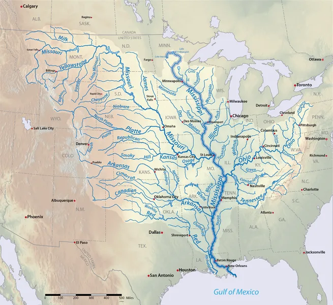
The Mississippi delta
- The largest and best-known U.S. delta, where the Mississippi enters the Gulf of Mexico.
- Its basin is the largest in North America, draining 41% of the contiguous United States, so the river carries a great deal of sediment.
- Engineering has straightened the channel and fixed it in place; the river is 229 km shorter than before. Deposition is now focused at one trunk channel, making a "bird's foot" delta.
From 1976 to 2001 the shoreline retreated and land was flooded, while sediment built up only at the ends of the distributaries (Figure 11.31, Figure 11.32). These changes show sea-level rise and land subsidence: peat compacts and sinks because new sediment no longer reaches it.

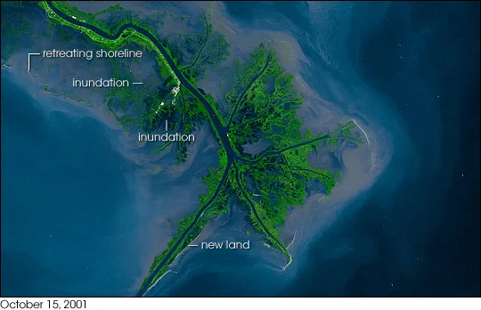
The Mississippi delta began forming about 7,500 years ago, when sea level stopped rising after the last glaciation. Over the past 7,000 years, before human changes, the river built a series of delta lobes, abandoning each for a better route to the Gulf. Gulf waves reworked each abandoned lobe, and isostatic sinking plus compaction made the land subside.
Deltas can form fast. In the 1959 magnitude 7.5 Madison Canyon earthquake in Montana, a landslide dammed the Madison River and formed Quake Lake, which is still there (see Unit 10). A small tributary that once flowed into the Madison now flows into Quake Lake, building a delta of coarse sediment eroded from the uplifted mountain block to the north.
| Type | Conditions | Example |
|---|---|---|
| Small tides; wave energy dominates | Nile delta, Mediterranean Sea: the classic triangle (Greek letter Δ) that gave the landform its name (Figure 11.33) | |
| Strong tides shape the delta, pushing linear intrusions of seawater into it | Ganges–Brahmaputra delta, Bay of Bengal: the world's largest delta, with the world's largest mangrove swamp, the Sundarbans (Figure 11.34) |

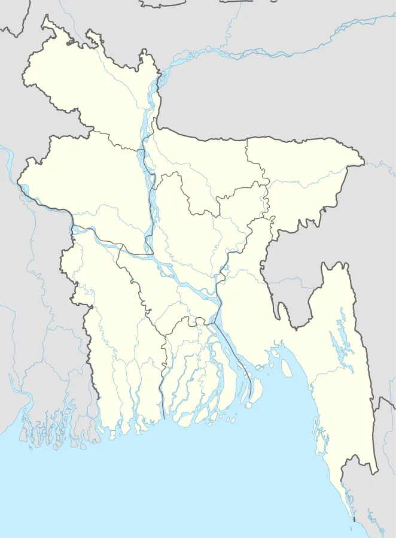
Delta shape tells the dominant force
River-dominated (Mississippi): sediment builds long fingers along fixed distributaries, a "bird's foot".
Wave-dominated (Nile): waves spread sediment along a smooth, arc-shaped front.
Tide-dominated (Ganges–Brahmaputra): tides cut linear channels into the delta.
"River-dominated" is a standard third category; the chapter describes the Mississippi's bird's-foot shape without naming it.
Lake Bonneville was a large that covered the western half of Utah and part of eastern Nevada from about 30,000 to 12,000 years ago. It reached about 5,100 feet above sea level, filling the basins and leaving many mountains as islands. Lake mud, silt, and coarse mountain gravel were all deposited. Lake levels changed with regional climate and with the catastrophic failure of the lake's main outlet at Red Rock Pass. Where the level held steady for a long time, waves cut terraces still visible on many mountain slopes, and big deltas formed at the mouths of canyons in Salt Lake, Cache, and other valleys. The Great Salt Lake is a remnant of Lake Bonneville, and cities are built on its delta deposits (Figure 11.35, Figure 11.36).
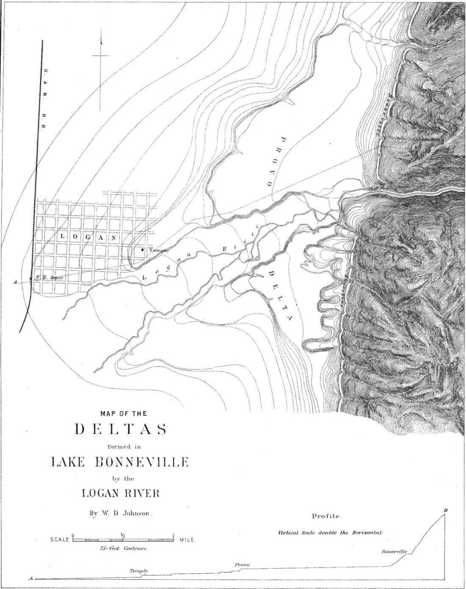
Lake Bonneville at a glance
- Pluvial lake, about 30,000–12,000 years ago.
- Highest level about 5,100 ft (1,555 m) above sea level.
- Outlet failure at Red Rock Pass dropped the lake catastrophically.
- Left wave-cut terraces and canyon-mouth deltas.
- Great Salt Lake is its remnant.
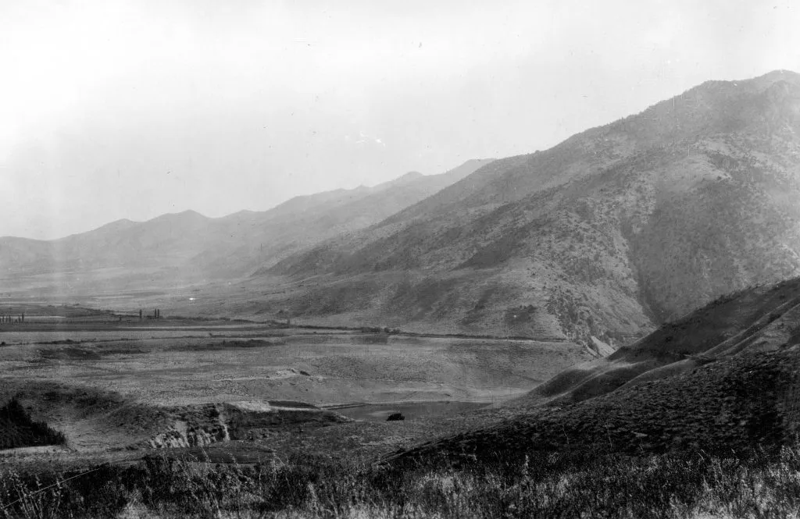
Stream terraces
are remnants of older floodplains that sit above the present floodplain and river. Like entrenched meanders, they form when uplift happens or base level drops: the stream cuts down, and its meanders widen a new, lower floodplain (Figure 11.37). Terraces can also form in extreme floods from retreating glaciers. A classic example is the series of terraces along the Snake River in Grand Teton National Park, Wyoming (Figure 11.38 shows terraces in Scotland).

Check yourself: Section 11.5 quiz in the textbook ↗
11.6Groundwater
Groundwater is an important source of fresh water. It exists at some depth beneath every place, but how much can be pumped, and its quality, are limited.
11.6.1 Porosity and permeability
An is a rock unit or sediment that holds extractable groundwater. A good aquifer must be both porous and permeable (Figure 11.39):
- : the open space that can hold water, as a percentage of the rock's total volume. is space between sand grains or vesicles in volcanic rock; is fractures or dissolved spaces formed later. Compaction and cementation during lithification reduce porosity (Chapter 5.3).
- : how well the spaces connect so water can move through.
Well-sorted sediment has higher porosity because no small grains fill the spaces between large ones. Shale made of clay usually has high porosity, but its pores are poorly connected, so its permeability is low.
Geologists more often use to describe how easily a fluid moves. It combines the permeability of the material with properties of the fluid, such as viscosity, so petroleum geologists use it for oil and gas reservoirs and hydrogeologists use it for aquifers. High hydraulic conductivity means fluid moves through quickly.
11.6.2 Aquifers
For rock or sediment to be an aquifer, its pores must be at least partly filled with water, and it must be permeable enough to transmit water. Aquifers range from several formations across a large region to one local formation.
The three P's of a water-supply aquifer
- Porous: holds water
- Permeable: lets water move
- Potable: safe to drink
11.6.3 Groundwater flow
Water that soaks into the ground passes through layers with different amounts of water and pressure (Figure 11.40, Table 11.11).
| Zone | Pores | Fluid pressure |
|---|---|---|
| (unsaturated zone, zone of aeration) | Not completely filled with water; plant roots live in its upper part | Less than atmospheric |
| (usually thin) | Filled by capillary action (adhesion plus cohesion) | Less than atmospheric |
| : the boundary between the capillary fringe and the saturated zone | ||
| Completely filled with water | At or above atmospheric | |
are openings drilled into aquifers to take out, measure, and sometimes add water. They are how geologists measure the depth to groundwater.
The simplest water table is in an , one with no confining layer above it. A is a low-permeability layer above and/or below an aquifer that restricts water moving in or out. It includes:
- : so impermeable that no water travels through them.
- : layers that greatly slow the water passing through them.
A confining layer can pressurize the aquifer below it by trapping water that was recharged at a higher elevation. Then the , the height water would rise to in a well tapping the aquifer, is above the top of the aquifer, and sometimes above the land surface. Faults or wells that breach a pressurized aquifer make springs or flowing wells, called (Figure 11.41).
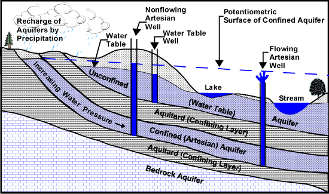
The water table generally mirrors the topography, but more gently, because along the water table the water pressure equals atmospheric pressure. Where the water table meets the ground surface, water appears as a gaining stream, spring, lake, or wetland (Figure 11.42).
- A 's channel intersects the water table, so the stream gains water from the ground.
- A 's channel lies above the water table, so the stream loses water down to it. (The chapter says "below"; see Fact-check notes.) Losing streams may flow only seasonally, or be ephemeral in dry climates, carrying water only after storms, where they bring a serious danger of flash floods.
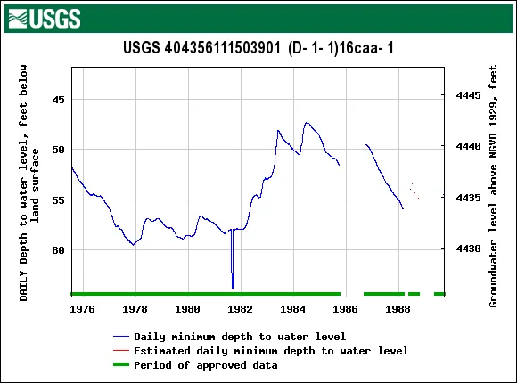
Reading a hydrograph
Geologists use wells to measure the height of the water table and the potentiometric surface. A plots depth to groundwater over time.
Well water levels change for many reasons, as often as every minute, with the seasons, and over longer periods.
The chapter's video mentions the USGS Groundwater Watch site (see Resources).
Darcy's law
In 1856 French engineer Henry Darcy proposed that flow through a porous material is controlled by permeability, pressure, and cross-sectional area. He tested it with tubes of packed sediment with water running through them, and his results established : a quantitative measure of hydraulic conductivity and discharge. It is similar to Fourier's law of heat conduction, Ohm's law for electrical circuits, and Fick's law of diffusion.

Pumping changes the water level around a well (Figure 11.45):
- In an unconfined aquifer, pumping lowers the water table near the well (), making a .
- In a confined aquifer, pumping an artesian well lowers the pressure, or potentiometric surface, around it.
Where one cone of depression meets another, or meets a barrier such as an impermeable mountain block, drawdown increases. Where a cone reaches a recharge zone, it lessens.
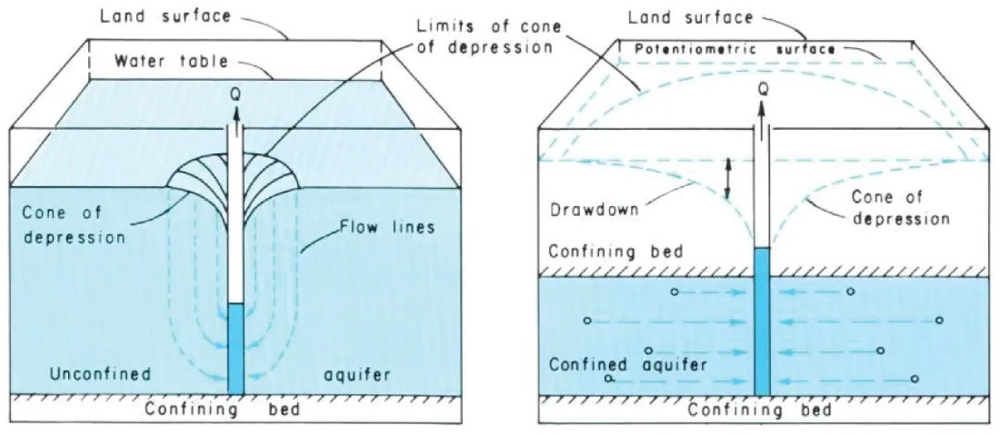
11.6.4 Recharge
A is where surface water enters an aquifer by infiltration. Recharge areas are usually topographically high, with losing streams and permeable rock, and they mark the start of groundwater flow paths. In the Basin and Range, valley aquifers recharge along the mountain foothills. In the Salt Lake Valley foothills, losing streams feed the gravel-rich delta deposits of ancient Lake Bonneville, in places supplying artesian wells.
Aquifers can also be managed by storage and recovery: increasing recharge with injection wells and infiltration galleries or basins (Figure 11.46). Injection wells, regulated by state and federal governments so they do not harm the quality or supply of existing groundwater, pump water into an aquifer for storage. Some aquifers can store enough to be used like a surface reservoir: filled when demand is low and supply high, and pumped when demand is high and supply low.
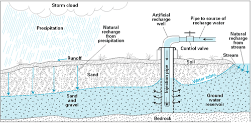
11.6.5 Discharge
are where the water table or potentiometric surface meets the land surface. They mark the end of groundwater flow paths, with springs, flowing (artesian) wells, gaining streams, and in the dry valleys of the Basin and Range.
11.6.6 Groundwater mining and subsidence
Fresh, drinkable water is finite; the only natural source of water on land is precipitation. In many places groundwater is pumped faster than it is replenished, so water levels and potentiometric surfaces fall and discharge areas shrink or dry up. This regional decline is (groundwater overdraft). It can dry up wells, reduce spring and stream flow, and cause subsidence. There, groundwater must be treated like an ore body: once depleted, towns can become ghost towns.
Water helps hold up an aquifer's grain framework through the it exerts, which comes from the weight of overlying water. If mining lowers pore pressure, the aquifer can compact and the ground surface sinks: . Aquifers of unconsolidated sediment are most at risk, especially those with many clay layers, because clay compacts a lot when drained.
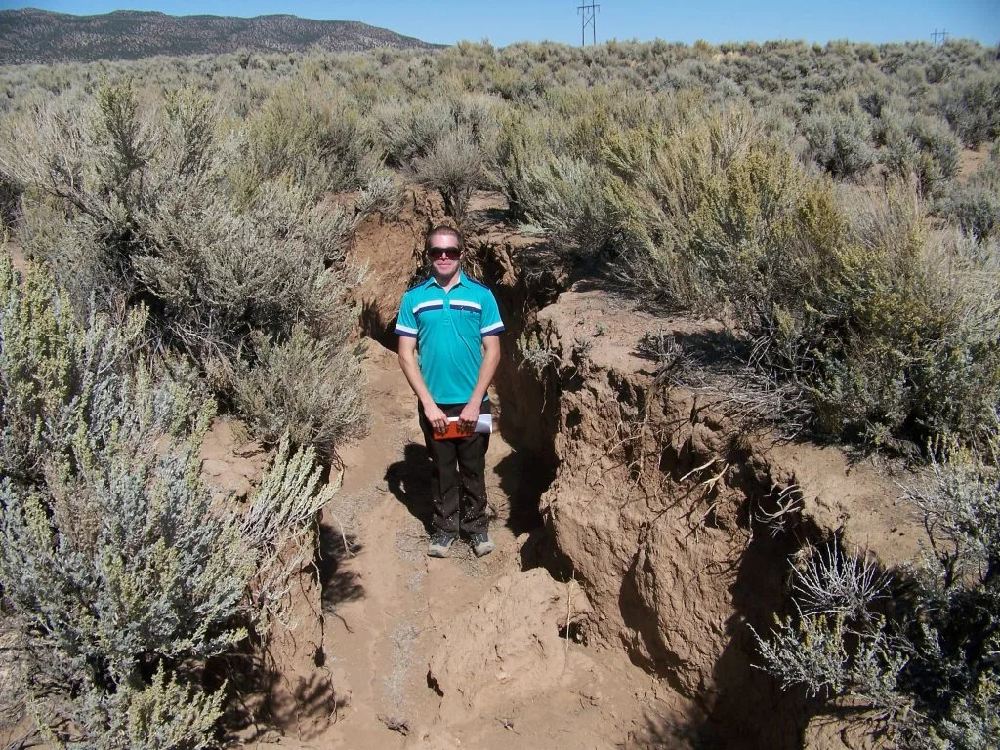

Reading the pole
The signs mark where the ground surface was in past years. The ground sank as irrigation wells pumped water from the aquifer and its clay layers compacted.
Outside source: USGS Circular 1182 (Galloway and others, 1999, one of the chapter's references) describes this site, near Mendota in the San Joaquin Valley, where the land sank about 9 m (28 ft) between 1925 and 1977.
Check yourself: Section 11.6 quiz in the textbook ↗
11.7Water contamination and remediation
Water can be contaminated naturally (for example, by mineral-rich rock formations) and by people: agriculture, industry, landfills, animal operations, sewage treatment, and more. As water runs over land or soaks into the ground, it dissolves what these sources leave behind. The risk, and the right cleanup, depend on which chemicals are present. Small sediment that clouds well water (turbidity) is a problem for some wells, but it is not counted as contamination.
| Point source | Nonpoint source | |
|---|---|---|
| Term | pollution | pollution |
| Origin | One definable source | Many dispersed sources; each is harmless alone, but together they are harmful |
| Examples | Waste disposal sites, storage tanks, sewage treatment plants, chemical spills | Lawn fertilizer across a neighborhood; nitrate and phosphate, herbicides, and pesticides from farms; nitrate from animal operations and septic systems |
Three major groups of contaminants
| Group | What they are | Examples from the chapter |
|---|---|---|
| Strands and rings of carbon atoms, usually joined by covalent bonds, with other atoms (such as chlorine) or groups (such as hydroxyl, OH) attached. Their arrangement decides how they behave, how dangerous they are, and where they end up. Tens of thousands exist, and many have never been tested for health or environmental effects. | Herbicides, pesticides, pharmaceuticals, fuel, industrial solvents and cleansers, surfactants (cleaning agents), synthetic hormones | |
| May contain carbon, but not in long strands or rings. | Chloride, arsenic, nitrate (NO₃⁻), phosphate, metals (lead, mercury, arsenic), salt (sodium chloride) | |
| Harmful bacteria and viruses. | Escherichia coli (E. coli) |
Organic contaminants. Some, such as synthetic hormones from pharmaceuticals and some surfactants, are : they mimic hormones and can cause long-term effects on the developing reproductive systems of young animals. Very small amounts can cause big changes in animal populations.
Love Canal, Niagara Falls, New York
From 1942 to 1952 (1953 per USGS), the Hooker Chemical Company dumped about 21,000 tons of chemical waste, including chlorinated hydrocarbons (organic chemicals with chlorine, most of them toxic and carcinogenic), into a canal and covered it with a thin layer of clay. The land went to the school board and was developed into a neighborhood. After residents suffered serious health problems and oily fluid seeped into basements, the neighborhood was evacuated. It became an EPA , with federal money and oversight for its cleanup.
Inorganic contaminants. Nutrients can come from rock, such as phosphorus-rich rock, but mostly come from fertilizer and animal and human waste. Untreated sewage and farm runoff carry nitrogen and phosphorus, which feed microorganisms. In lakes, nitrate and phosphate promote blooms of blue-green algae (cyanobacteria) that use up oxygen and make toxins (microcystins and anatoxins). This process is .
- Metals: lead, mercury, and arsenic are among the worst groundwater contaminants. In Bangladesh, arsenic from natural rock material dissolves into groundwater. can also add a lot of inorganic contamination (Chapter 16).
- Salt (usually sodium chloride) comes from natural evaporite deposits, such as the Arapien Shale of Utah, or from road salt. Near coasts, pumping can pull seawater into the cones of depression around freshwater wells: .
Biological agents. Harmful bacteria are usually absent from groundwater unless it is closely connected to a contaminated surface source such as a septic system. is especially vulnerable, because water moves quickly through conduits in dissolved limestone. Bacteria can also be used for cleanup.
The chapter's "Groundwater contaminants" table is a link to the USGS Water Science School. Table 11.14 lists a selection from that page.
| Contaminant | Sources to groundwater | Potential effects |
|---|---|---|
| Arsenic | Natural processes, industry, pesticides, smelting | A carcinogen |
| Lead | Industry, mining, plumbing, gasoline, coal | Delays normal physical and mental development in babies and young children |
| Mercury | Industrial waste, mining, pesticides, coal, batteries | Targets the kidneys; can cause nervous system disorders |
| Nitrate | Mineral deposits, fertilizer, feedlots, sewage | Methemoglobinemia ("blue baby" disease) |
| Chloride | Saltwater intrusion, mineral dissolution, waste | Deteriorates plumbing and water heaters |
| Fluoride | Natural, or added by cities; industry | High levels can stain or mottle teeth |
| Volatile organic compounds | Plastics, solvents, paints, fuels, pesticides | Can cause cancer and liver damage |
| Pesticides | Herbicides, insecticides, fungicides, rodenticides, algicides | Poisoning, headaches, dizziness |
| Coliform bacteria | Soils, plants, animal intestines, sewage, animal waste | Indicate risk of diseases such as cholera, typhoid fever, dysentery, and hepatitis |
| Turbidity (physical) | Suspended clay, silt, and particles | Objectionable for aesthetic reasons (not contamination in the chapter's sense) |
Remediation
is cleaning up contamination. Hydrologists use three types (Table 11.15). All are technically complex, expensive, and difficult; physical remediation is usually the most costly.
| Type | How it works | Example |
|---|---|---|
| Specific strains of bacteria break a contaminant down into safer chemicals. Mostly for organic chemicals, but also reduces or oxidizes inorganic ones like nitrate. | : plants absorb the chemicals over time | |
| Chemical | Chemicals remove the contaminant or make it less harmful. | : a permeable wall in the ground or at a discharge point; limestone barriers raise the pH of acid mine drainage, so dissolved contaminants precipitate as solids |
| Physical | Remove the contaminated water and either treat it or dispose of it. | : pump the water out and filter it |
Check yourself: Section 11.7 quiz in the textbook ↗
11.8Karst
is the landscape and the water features made by dissolving limestone. It can form wherever there is limestone or other soluble rock underground, such as salt deposits. Dissolution creates , caverns, , and towers (Figure 11.49).
How limestone dissolves
Carbon dioxide (CO₂) in the air dissolves easily in cloud droplets, so rain and snow are slightly acidic with . Karst forms when carbonic acid dissolves calcite (calcium carbonate) in limestone:


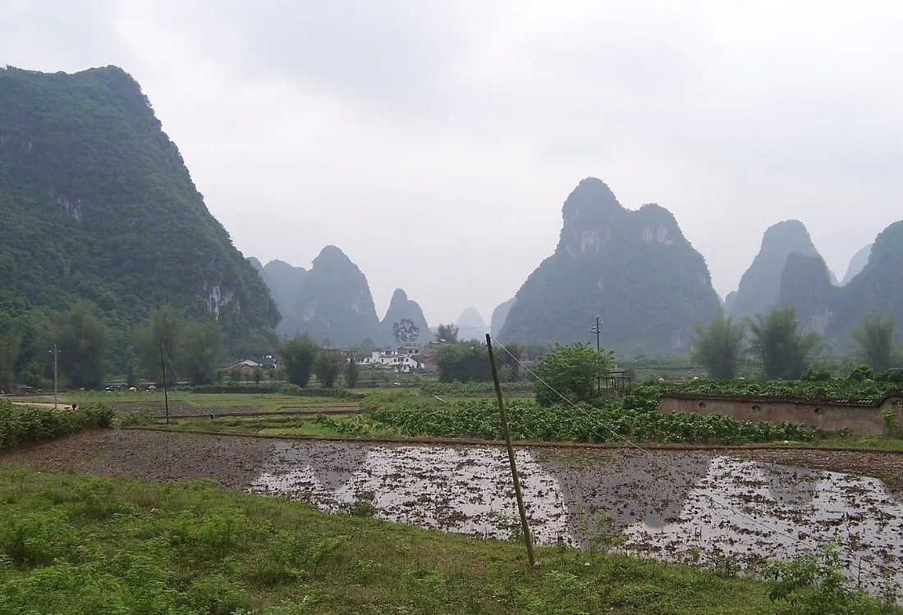
Redeposited calcite: tufa, travertine, and speleothems
After acidic water dissolves calcite, changes in temperature or gas content can make it deposit the calcite somewhere else as or , often at a spring or in a cave (Figure 11.53). are secondary deposits, usually travertine, that form in caves as water drips through cracks and openings and leaves calcite behind (Figure 11.54):
- hang from the ceiling.
- stand up from the floor.

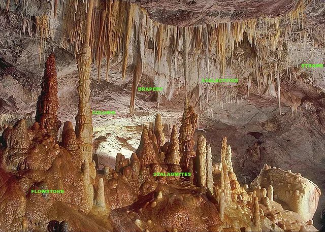
Water in and out of karst
Surface water enters karst through sinkholes, losing streams, and disappearing streams (Figure 11.55). A change in base level can make a river flowing over limestone dissolve it and sink underground. As water keeps dissolving its way through, it leaves networks of caves and narrow passages, often by widening fractures. Water leaves the karst system at springs and rises. In mountains, dissolution can run through the whole height of the mountain, with caverns dropping thousands of feet.
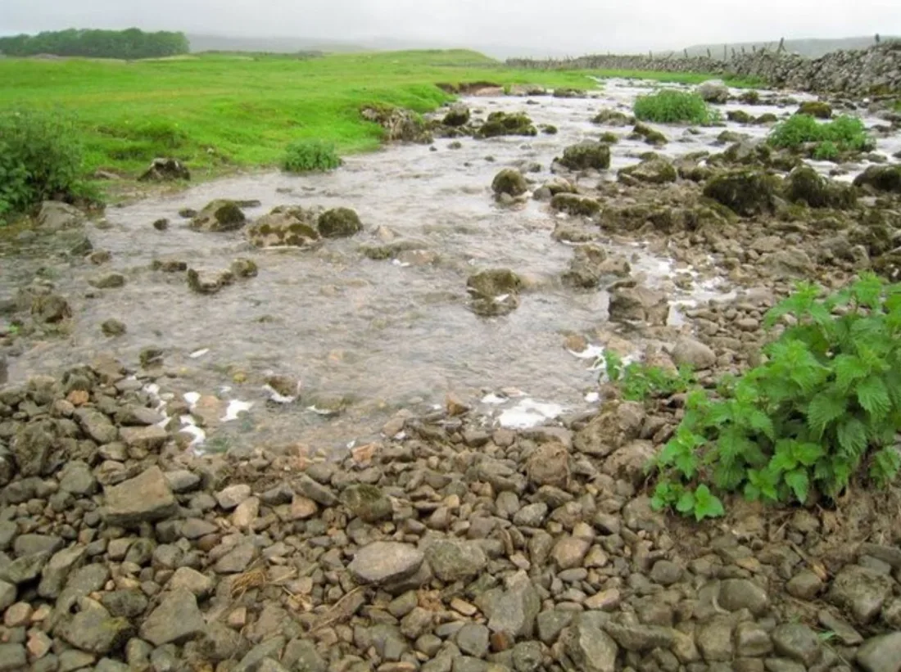
Check yourself: Section 11.8 quiz in the textbook ↗
Summary
Water is essential for all living things. It cycles continuously through the atmosphere, over land, and through the ground. In the United States and elsewhere, water is managed through regional laws and regulations, and shared on paper as water rights. Surface water follows a watershed, separated from others by its divides (high ridges). Streams erode in their headwaters, transport sediment across floodplains, and deposit it in deltas, building landforms from point bars to terraces. Groundwater fills pores in rock and sediment and moves mainly because of pressure and gravity gradients. Human and natural causes can make water unfit to drink, and it can be cleaned biologically, chemically, or physically. Where water dissolves limestone, it forms karst, with caves and sinkholes.
Quick recap
- Water cycle: evaporation + transpiration → condensation → precipitation → runoff or infiltration.
- Drainage basin (watershed) bounded by divides; closed (endorheic) basins end in evaporation.
- Fresh water: 68.7% ice, 30.1% groundwater, rivers only 0.006%.
- Water rights: states control them; prior appropriation = first in time, first in right; Colorado River Compact (1922) over-allocated the river.
- Q = V × A. Velocity is fastest at the surface center, or on the outside of a bend.
- Zones: production (headwaters) → transport (floodplain) → deposition (delta). Base level: sea level is the ultimate one.
- Loads: bedload (saltation, traction), suspended, dissolved.
- Cut bank erodes, point bar builds; cutoff → oxbow lake → meander scar.
- Aquifer = porous + permeable (+ potable). Vadose zone → capillary fringe → water table → saturated zone.
- Darcy: Q = K A Δh/L. Pumping makes a cone of depression; overdraft causes subsidence.
- Contaminants: organic, inorganic, biological. Remediation: biological, chemical, physical.
- Karst: carbonic acid dissolves calcite → sinkholes, caves, speleothems, disappearing streams, towers.
Check yourself: Chapter 11 review quiz in the textbook ↗
Resources
Fact-check notes
Each fact in this guide comes from Chapter 11. These notes flag places where the chapter has an error or typo, simplifies, or differs from other reliable sources. Where the chapter is wrong, the guide corrects it and records the chapter's wording here.
| Chapter says | Check |
|---|---|
| "The channels for losing streams lie below the water table, thus losing streams lose water to the water table." | Corrected in this guide. A losing stream's channel lies above the water table, so water seeps down from it; a channel below the water table would gain water (USGS Water Science School; Heath, 1983, a chapter reference). |
| Nevada's mean statewide precipitation is 31 cm (12.2 in) per year. | The Nevada State Climate Office (University of Nevada, Reno) gives about 10.3 in (26 cm) for 1901–2000. Both agree Nevada is the driest state. |
| Love Canal: 1942–1952; "21,337 mt (21,000 t)"; land sold to the "New York School Board". | USGS (CERC case summary) gives dumping from 1942 until 1953, "over 21,000 tons", and says the land was deeded to the Niagara Falls Board of Education in 1953. The metric figure in the chapter matches 21,000 long tons, not short tons; the guide uses "about 21,000 tons". |
| Snake Valley: "negotiations have not yet been settled." | Out of date. In May 2020 the Southern Nevada Water Authority withdrew its pending groundwater applications and deferred the pipeline indefinitely (Las Vegas Sun, May 21, 2020). |
| "Alluvial fan in Iraq seen by NASA satellite." | The image file in the chapter's media attributions is "Alluvial_fan_in_Iran", so the fan is probably in Iran. |
| Speleothems form by water dripping into caves "and evaporating". | Simplified. In most caves calcite deposits mainly because dripping water releases (degasses) CO₂ into the cave air; evaporation plays a small role except near entrances (Earle, Physical Geology, CC BY). The chapter's own karst paragraph says changes in "gas content" redeposit calcite. |
| "tufa (travertine)" used as one material. | The textbook glossary separates them: tufa forms in relatively unheated water, travertine often in heated water at springs and in caves. The guide names both. |
| Plants release water vapor "as a byproduct of photosynthesis called transpiration". | Simplified: transpiration is evaporation of water through leaf pores (stomata), which open to take in CO₂ for photosynthesis. It is linked to photosynthesis but is not a chemical product of it. |
| Darcy's law: "Δh = change in pressure head". | Strictly, Δh is the change in hydraulic head (elevation head plus pressure head). For the horizontal tube in Figure 11.44, the two are the same. |
| Capillary fringe "below the vadose zone". | Many sources (for example, USGS) count the capillary fringe as the lowest part of the vadose (unsaturated) zone, since its water is held at less than atmospheric pressure. The guide keeps the chapter's order. |
| Colorado River flow "no longer reaches the Pacific Ocean". | The river's natural end is the Gulf of California, an arm of the Pacific. Since the 1960s it has rarely reached the gulf (USBR). The guide says "the sea". |
| Amazon discharge about 175,565 m³/s (6,200,000 cfs), from a 1967 USGS measurement. | Modern long-term estimates are higher, about 209,000 m³/s. The guide keeps the chapter's figure. |
| 1959 Madison Canyon (Hebgen Lake) earthquake, magnitude 7.5. | As in Unit 10: USGS gives M7.3; the University of Utah lists 7.5. |
| Discharge units: the chapter repeats "Therefore, the units of discharge are..." twice and lists A in "in² or ft²". | Editing slips. The guide gives m³/s (cms) and ft³/s (cfs). |
| Glossary pop-ups for "precipitation", "reservoir", "grade", "graded", "saltation", and "suspended load". | The textbook's glossary entries describe other meanings (chemical precipitation, petroleum reservoirs, metamorphic grade, graded bedding, wind saltation) or are unclear. The key-terms panel defines them as used in this chapter. |
| Cell names, the river-dominated delta type, Colorado River dates (1936, 1944, 1966), the Mendota subsidence figure, and the USGS contaminants table. | Not in the chapter text; added from the sources named where they appear. |
Credits
Content summarized from An Introduction to Geology, Chapter 11, © 2017 Chris Johnson, Matthew D. Affolter, Paul Inkenbrandt, and Cam Mosher, licensed CC BY-NC-SA 4.0. Every photo and drawing taken from the chapter is credited in its caption, with the license given in the chapter's media attributions.
- Three Chapter 11 photos by Paul Inkenbrandt are marked "All Rights Reserved" and are not used: the entrenched meander of the Colorado River near Page, Arizona (the chapter's opening photo), the Quake Lake delta, and the Snake River terraces in Grand Teton National Park.
- Drawn for this guide from the chapter's descriptions: global circulation (Figure 11.9), fresh-water chart (Figure 11.11), discharge calculator (Figure 11.12), stream zones (Figure 11.15), stream load animation (Figure 11.16), natural levees (Figure 11.17), meander to oxbow (Figure 11.25), stream terraces (Figure 11.37), pore space (Figure 11.39), groundwater zones (Figure 11.40), gaining and losing streams (Figure 11.42), the Darcy calculator (in Figure 11.44), and karst (Figure 11.49).
- Outside sources are named where they are used: USGS (Water Science School; Circular 1182; CERC Love Canal summary), U.S. Bureau of Reclamation, Nevada State Climate Office, Las Vegas Sun, Freeze and Cherry (1979), and Steven Earle, Physical Geology (BCcampus, CC BY).